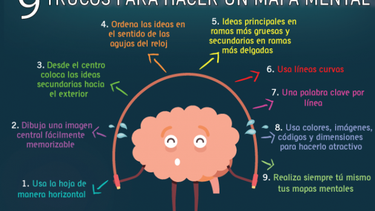

Lo primero que haremos es el Recurso Digital: Mapa mental creado con MindMeister o con Mindomo
Debemos darle una descripción: Un mapa mental sobre "Los principales destinos turísticos y atractivos culturales de una ciudad francesa o su gastronomía y sus platos más representativos".
Esta actividad ayudará a los estudiantes a organizar visualmente la información sobre la gastronomía francesa, mejorar la comprensión y facilitar la memorización de los términos en francés
Instrucciones para crear un mapa mental con MindMeister:
Mapas mentales con MindMeister o Mindmodo, herramienta en línea que permite crear mapas mentales de manera colaborativa. Permite añadir notas, enlaces y archivos adjuntos a cada nodo del mapa. También ofrece integración con otras herramientas como Google Drive . Resulta ideal para el desarrollo de nuestro proyecto GUÍA TURÍSTICO VIRTUAL y para la organización de ideas en clases colaborativas
Karito Vargas, CREA MAPAS MENTALES EN MINDOMO || TUTORIAL 2021 (licencia estándar de YouTube)
UNZUGON, Como HACER un MAPA MENTAL BONITO con MINDMEISTER 2024 ✅ (PASO a PASO) 👞 (licencia estándar de YouTube)
Guía con los pasos para crear un mapa mental
"Imagen de orientacionandujar, el 3 noviembre, 2015 enlazando el origen, bajo 'licencia original'